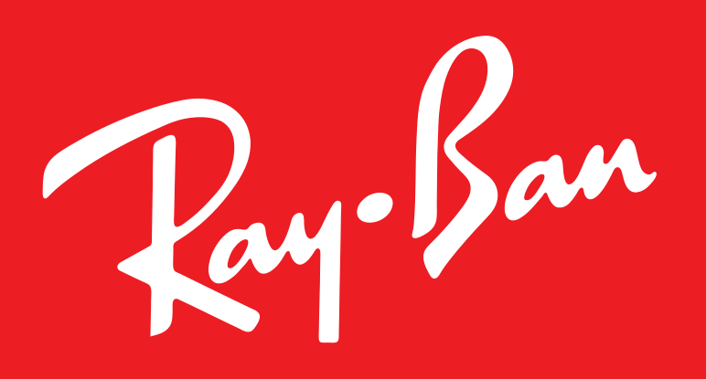
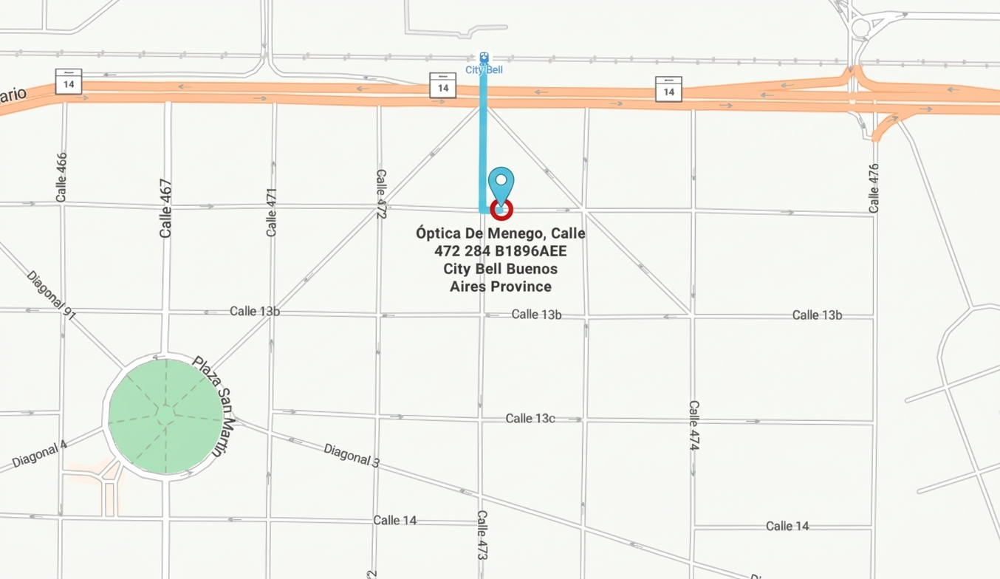

1969
El año en que abrimos por primera vez la puerta en City Bell.
57
Años acompañando la vista de la ciudad, década tras década.
4
Generaciones al cuidado de tu visión.
Las marcas de la temporada
Las colecciones que destacamos cada temporada en @opticademenego.
Nacimos como óptica de pueblo.
En 1969 la esquina era otra, la moda era otra y City Bell era otro. Casi seis décadas después, seguimos acá probando anteojos uno por uno, como el primer día.
"Una empresa familiar al cuidado de tu visión."
Más de medio siglo en City Bell
Generaciones enteras se calzaron sus primeros anteojos en esta vidriera.
Visitanos
A una cuadra de la estacion de tren, a dos de la vidriera que conocés.

En Google Maps la dirección figura como Calle 472 284; en su Instagram como Calle 13a N° 284, e/Cantilo y 473 bis.
Dirección
Calle 13a N° 284, entre Cantilo y 473 bis.
City Bell, Buenos Aires · a unos 150 m de la estación.
Horarios
Lunes a viernes: 9:30 a 13:30 y de 14:00 a 17:00.
Sábados: 11:00 a 14:00.
Temporada publicada en septiembre de 2026 — confirmá el vigente por Instagram.
¿Vamos a probarnos unos anteojos?
Escribinos contando qué buscás — receta, sol, colores — y coordinamos la visita o te respondemos con precios.